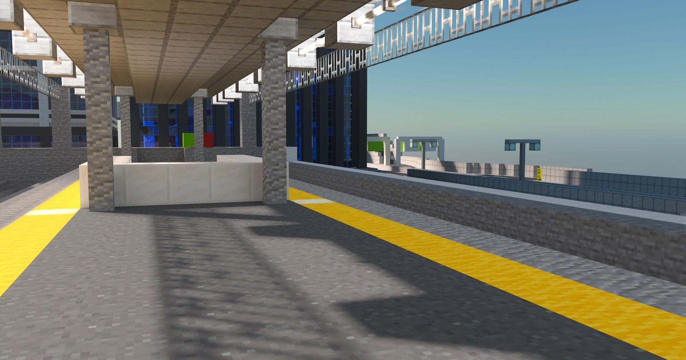

建設事業・施工実績

海急グループの建設部門である海急重工では、鉄道・高速道路・橋梁・都市施設など、 幅広いインフラ整備を担っています。
新海場や広崎を中心とした新桜地域全域で、 未来を見据えた都市開発を推進中です。
代表的なプロジェクトには、新海場と広域圏を高速に結ぶ「新海場新幹線」、 交通の要所として整備された「北海場JCT（ジャンクション）」、
広崎湾をまたぐランドマーク「広崎大橋」などがあり、これらを通じて大都市と郊外を快適に結ぶネットワークを支えています。
北海場JCT
北海場ジャンクションは新海場線と首都高環状線が交差する大規模な立体交差点で、
新桜の広域交通ネットワークの中核として交通の円滑化と物流効率化に貢献しています。

新海場新幹線
新桜新幹線は、新桜地域を縦断し、都市間の高速移動を可能にする高速鉄道です。最新の車両技術と
高規格な路線設計により、快適かつ高速な移動が可能であり、地域の経済成長や交流の活性化を力強く後押ししています。

広崎大橋
広崎大橋は、黒子と広崎を結ぶ巨大な橋であり、鉄道と高速道路の両方が通行可能な複合構造です。
地域間のアクセスを飛躍的に向上させ、物流や人の流れを支える重要なインフラとなっております。